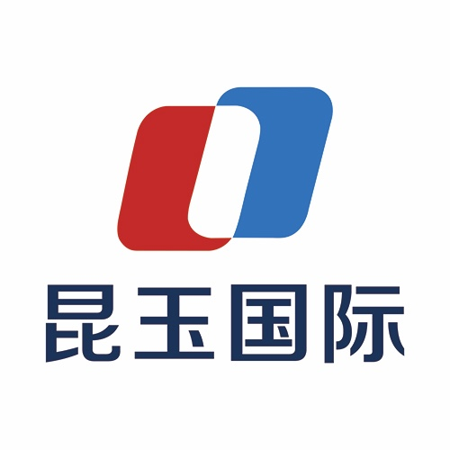

北京昆玉顺达国际信息咨询有限公司（以下简称“昆玉国际”）成立于2016年底，注册资本3000万，是一家专业的经济信息咨询服务机构。
昆玉国际致力于为广大小微企业主、个体工商户等提供商业咨询服务，以便客户更有效率、更低成本地解决商业问题，帮助客户持续、稳健经营。
昆玉国际至今已为来自数百个行业、上千位客户提供优质的咨询服务。如今，昆玉国际针对客户信贷需求，专门开发并上线“御用金”APP，为信贷经纪人提供功能齐全、操作简便的移动展业平台和智能贷款顾问、流程运营服务，撬动信贷经纪人共同为客户解决融资难、融资贵的难题。